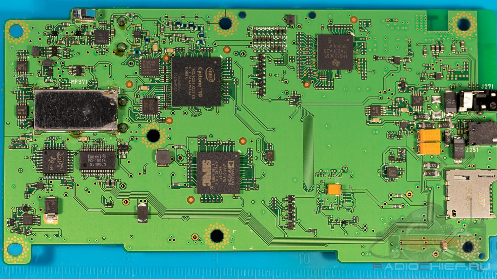
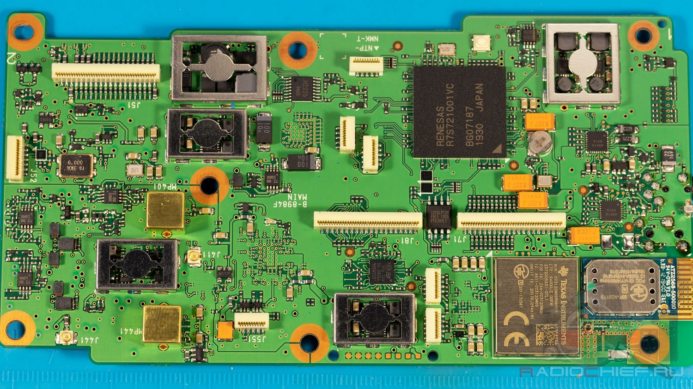
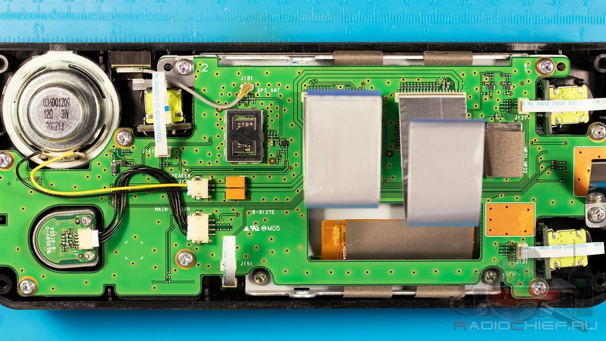
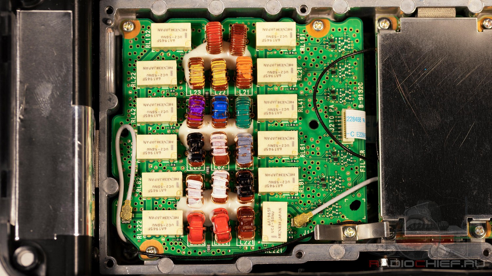
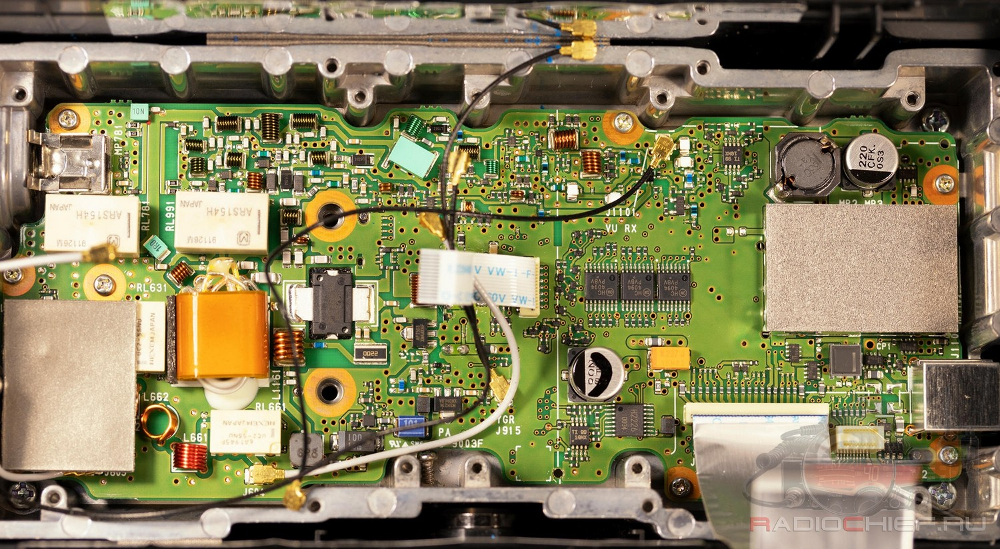
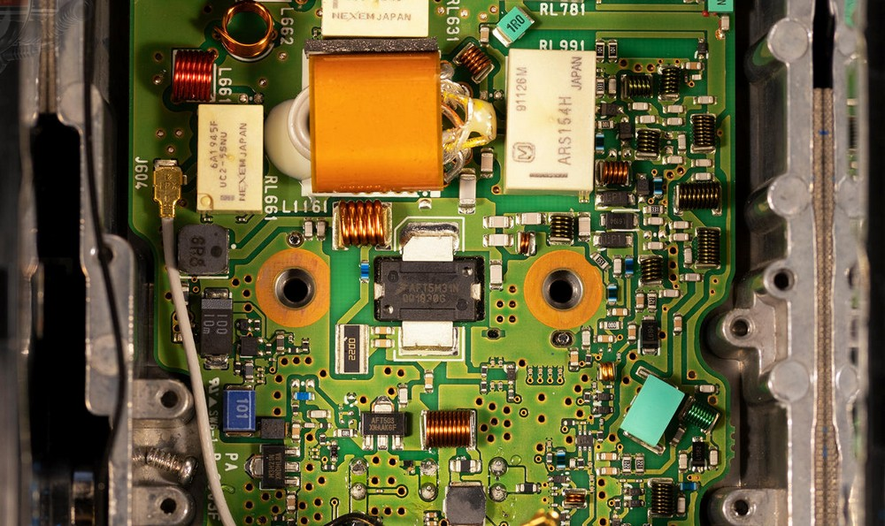
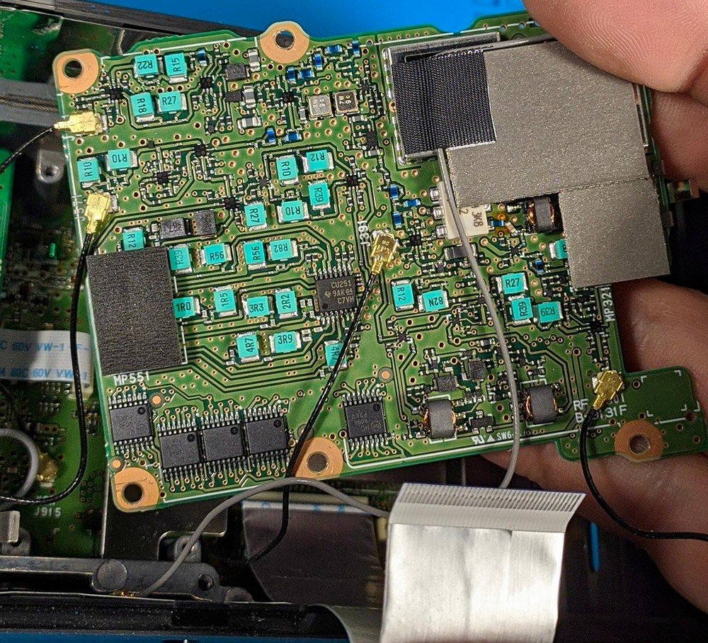
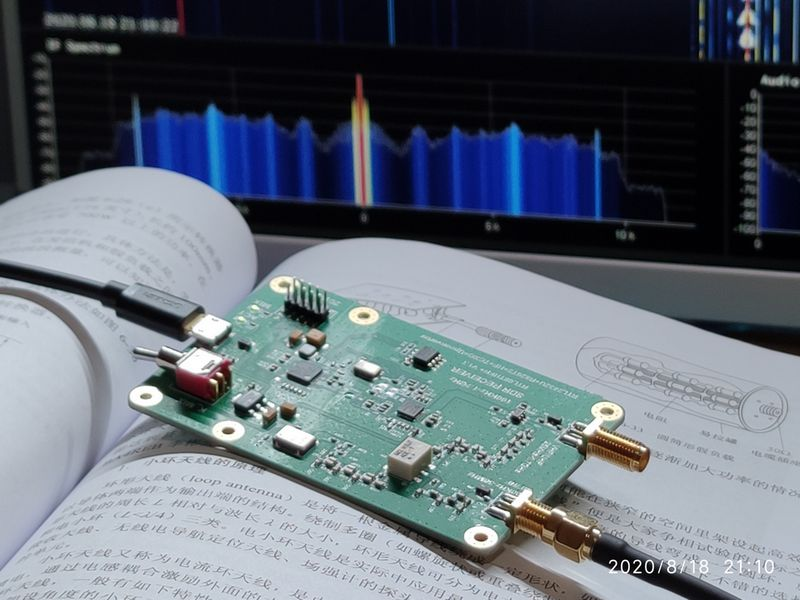
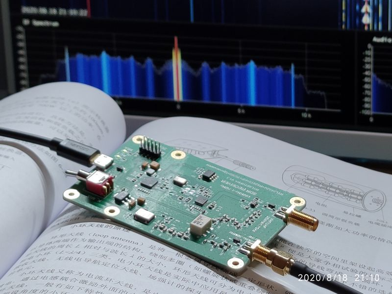

CQ 24 / ITU 44 / OM91
江苏·南京 Nanjing, Jiangsu, China
江苏·南京 Nanjing, Jiangsu, China
IC-705是ICOM社2019年推出的一款QRP全波段全模式便携电台，支持在HF/VHF/UHF波段的各业余频段上，以最高10W、最低0.5W的功率进行发射。
该电台采用SDR架构。从框图中可以看出，705对于24MHz以下的HF信号采用射频直接采样的方式，通过FPGA进行处理。而24MHz以上的信号先经过下变频到中频，再使用ADC进行采样。经FPGA处理后的数字中频信号被送入DSP进行处理，实现高刷新率的频谱瀑布图功能。
作为一款QRP电台，IC-705对天线要求比较高。但受限于体积，705并未提供内置天调。
在438.850MHz和439.300MHz两个频点附近有自我干扰。
从拆机视频可以看出，705内部结构相当紧凑，大致可以分为4层。从屏幕开始，第一层主要是屏幕和按键，第二层负责基带数字信号处理（SDR），第三、四层负责射频信号处理。机器核心芯片列表如下（报价来源贸泽电子，均为单片价格，含税）：
SDR板上有两个射频接口，猜测其中一个是由AD直接采样的24MHz以下射频信号，另一个是经下变频得到的中频信号。这两个信号将进入ADC被转换为数字信号。
      参考资料：
宝锋的这款手台，价格非常便宜，仅100元出头，是许多新手Ham入门的第一部机器。该机支持业余V/U段收发以及调频广播接收，最大发射功率5W，仅支持模拟FM模式。作为入门机器，UV-5R带有一块点阵液晶屏幕以及全数字键盘，手动置频比较方便。
德生PL-330是2020年7月推出的一款支持SSB接收的中端DSP收音机，可接收的波段包括长波、中波、短波、以及调频广播。
参考资料：
德生PL-380除不支持SSB解调之外，功能和架构上的差异不大，性能指标也大致相同。
RTL-SDR是基于瑞昱RTL2832U和R820T2调谐芯片的电视棒，配合PC、手机上的SDR#等软件可实现SDR无线电接收和解调功能。目前拥有的有两个版本：普通版和上变频版。上变频版可以将短波段的信号上变频到125MHz，以提高接收短波的灵敏度。
RTL-SDR是成本极低的SDR入门设备，可玩性很高，详情另文。
 

拉杆天线，支持3.5～50M所有业余短波段的发射和接收，耐功率100W（SSB，不含3.5MHz）。
拉杆天线，支持业余V/U段的发射和接收，支持300MHz接收。业余2m波段增益2.15dBi，业余0.7m波段增益5.5dBi。耐功率20W，阻抗50Ω。
仅工作在业余0.7m波段，主瓣方向标称增益8dBi。
这是一款行波天线，包含一个巴伦和一个吸收电阻元件（实测电阻150Ω）。由于暂时无法发射短波，因此发射效果未测试，但接收效果似乎不错，接收FM调频广播的效果尤其好，背景黑，信号强，不知道为什么。
驻波天线支持驻波，类似于谐振回路。行波天线的作用类似于导波结构，在天线末端加上匹配负载吸收剩余电磁能量，可以防止反射波的产生。对于很长的线天线，由于电流沿着天线流动时不断地辐射，能量不断地消耗掉，仅仅有很少的电磁能量到达天线末端，也可以看成是行波天线。
这款天线是有源天线，通过前置放大器放大微弱的信号，工作频率为100k~180MHz。
一款低成本的网络分析仪。


| 日期时间(CST) | 对方呼号 | 频率(MHz) | 模式 | RST | 本台信息 | 对方信息 |
|---|---|---|---|---|---|---|
| 2020-12-08 18:15 | BG4RBB | 439.375中继 | NFM | 59/59 | UV-5R/原装天线/5W/公司 | 自由通588车台/吸盘天线/10W/南站 |
| 2020-12-08 22:09 | BH4WHQ | 439.375中继 | NFM | 59/58 | IC-705/SRJ770/5W/家 | Yaesu FT-991A/玻璃钢天线/5W/丁家庄32楼 |
| 2020-12-10 19:07 | BH4WHQ | 439.675中继 | NFM | 59/59 | UV-5R/原装天线/5W/公司 | Yaesu FT-991A/玻璃钢天线/5W/丁家庄32楼 |
| 2020-12-11 21:00 | BG4WIP | 439.375中继 | NFM | 59/59 | IC-705/八木/5W/家 | 车台/玻璃钢天线/20W/丁山花园酒店 |
| 2020-12-11 21:05 | BG4WIP | 431.7375 | NFM | ?/59 | 同上 | 同上 |
| 2020-12-11 21:10 | BG4RBB | 431.7375 | NFM | 48/59 | 同上 | 60W，其余未抄清 |
| 2020-12-11 21:20 | BG4RCI | 431.7375 | NFM | 59/59 | 同上 | 即时通车台/1米玻璃钢天线/5W/大行宫 |
| 2020-12-12 19:20 | BD4STQ | 433.550 | NFM | 58/58 | IC-705/八木/5W/家 | 自由通878/老鹰660S/5W/岔路口 |
| 2020-12-13 13:50 | BD4STQ | 439.675中继 | NFM | 59/断续 | IC-705/SRJ770/5W/羊山公园湖边/雾霾 | 自由通878/老鹰660S/5W/岔路口 |
| 2020-12-18 19:45 | BG4WIP | 439.375中继 | NFM | 48/59 | IC-705/八木/10W/家 | ？ |
| 2020-12-18 19:51 | BG4WIP | 431.7375 | NFM | 59+/59+ | IC-705/八木/10W/家 | ？ |
| 2020-12-18 20:00 | BD4STQ | 433.550 | NFM | 59+/59+ | IC-705/八木/10W/家 | 森海克斯8800/老鹰天线/5W/岔路口 |
| —— 第 2 页 —— | ||||||
| 2020-12-19 19:42 | BD4STQ （台网主控） |
439.675 | NFM | 48/59 | IC-705/八木/5W/家 | 宝锋/1.4m玻璃钢天线/5W/马群5楼 |
| 2020-12-20 20:24 | BI4UMB （台网主控） |
438.475 （扬州中继） |
NFM | 59/? | IC-705/八木/10W/楼顶 | 扬州城南，其余未知 |
| 2020-12-24 21:40 | BD4STQ | 439.675中继 | NFM | 59/59 | IC-705/八木/5W/家 | 自由通878/车载天线/7W/岔路口 |
| 2020-12-26 21:20 | BH9FLV | 439.675中继 | NFM | 59/58 | IC-705/钻石770/5W/家/毛毛雨 | 滔滔链路/陕西西安 |
| 2020-12-26 21:23 | BI4RXM | 439.675中继 | NFM | 59/59 | IC-705/钻石770/5W/家/毛毛雨 | 森海克斯8600/老鹰775/5W/兴卫村 |
| 2021-01-01 14:10 | BD4REC | 439.675中继 | NFM | 59/59 | IC-705/钻石770/5W/家/晴 | 欧讯UV9D/拇指天线/2W/龙眠大道 |
| 2021-01-01 19:52 | BG4WIP （台网主控） |
431.7375 | NFM | 59/59 | IC-705/拉杆/5W/家/晴 | ? |
| 2021-01-02 19:38 | BD4SUH （台网主控） |
439.675中继 | NFM | 59/59 | IC-705/八木/5W/家/晴 | 海能达BD500/玻璃钢天线/5W/马群5楼 |
| 2020年 | |
|---|---|
| 07.18 | 购买PL-380。 |
| 07.20 | 开始阅读《业余无线电通信》。 |
| 08.01 | 前往新时代大厦（操作证考场）探路。 |
| 08.13 | 凌晨1点左右在楼顶看到一颗英仙座流星。 |
| 09.05 | 参加并通过A类操作证考试。 |
| 11.20 | 领取操作证并验机。 |
| 12.08 | 领取电台执照；首次合法通联。 |
| 12.13 | 首次野外通联（羊山公园）。 |

2020-08-04 使用PL-380收听到10MHz的BPM，并发出收听报告。收听到央广中国之声的停机检修音乐。
2020-08-05 电话咨询无线电管理处。
2020-08-15 诸君！深夜守在SDR#前面，观察人类文明在电波频谱上激起的微弱涟漪，这种感觉实在是好极了。希望操作证考试早日恢复，早日领取呼号，早日实现通联，在业余频段也留下属于我的一点涟漪。
2020-08-18 在8484kHz上收听到清晰的CW信号，RST599，报文内容为：CQ CQ CQ DE HLG HLG HLG QSX 8MHZ K。经查询，此电台是韩国首尔海岸电台。
在15325kHz上听到NHK国际日语广播，信号59。电波来自八俣送信所（茨城县古河市），同之前听到的“故乡的风”对朝电台。
2020-09-16 晚间，江北发生停电事故，在439.675中继上第一时间听到这个消息。
2020-10-26 买了30多米的廉价同轴线，每米价格不到10元，用来连接拉杆天线和IC-705听短波广播。不知道这种线跟那些动辄成百上千的成品品牌货有什么区别。我隐约感觉到火腿器材市场上也有很多智商税，但是目前还没有足够的判断力。先凑合用吧，毕竟现在还不用发射。
2020-10-31 在家里架设一条15米长的馈线，从环境比较好的北侧小房间接到主卧，这样就可以躺在床上听短波了。短波损耗比较小，但是U/V段损耗非常大。今晚中继点名是直频方式进行，信号本来就很弱，接上这条馈线后就完全收不到什么信号了。在7050上第一次听到有人跟朴某对骂。
| 字符 | 编码 | 字符 | 编码 |
|---|---|---|---|
| A | ● — | 0 | — — — — — |
| B | — ● ● ● | 1 | ● — — — — |
| C | — ● — ● | 2 | ● ● — — — |
| D | — ● ● | 3 | ● ● ● — — |
| E | ● | 4 | ● ● ● ● — |
| F | ● ● — ● | 5 | ● ● ● ● ● |
| G | — — ● | 6 | — ● ● ● ● |
| H | ● ● ● ● | 7 | — — ● ● ● |
| I | ● ● | 8 | — — — ● ● |
| J | ● — — — | 9 | — — — — ● |
| K | — ● — | @ | ● — — ● — ● |
| L | ● — ● ● | ? | ● ● — — ● ● |
| M | — — | / | — ● ● — ● |
| N | — ● | () | — ● — — ● — |
| O | — — — | — | — ● ● ● ● — |
| P | ● — — ● | 。 | ● — ● — ● — |
| Q | — — ● — | ||
| R | ● — ● | ||
| S | ● ● ● | ||
| T | — | ||
| U | ● ● — | ||
| V | ● ● ● — | ||
| W | ● — — | ||
| X | — ● ● — | ||
| Y | — ● — — | ||
| Z | — — ● ● |

| 频段 | 通信方式 | 频率范围 | 应急通信主控/公用呼叫频率 | |
|---|---|---|---|---|
| 国内通信 | IARU R3 | |||
| 135kHz | CW/NB | 135.7-137.8 | - | - |
| 1.8MHz | CW | 1.800-2.000 | - | - |
| RTTY DX窗口 | 1.830-1.834 | |||
| 无线电话 | 1.840-2.000 | |||
| 3.5MHz | CW | 3.500-3.900 | 3.600 | 3.600 |
| CW DX窗口 | 3.500-3.510 | |||
| 无线电话 | 3.535-3.900 | |||
| 无线电话DX窗口 | 3.775-3.800 | |||
| 7MHz | CW | 7.000-7.025 | 7.030(CW/NB) 7.050(SSB) |
7.110 |
| 窄带 | 7.025-7.040 | |||
| 无线电话 | 7.030-7.200 | |||
| 10MHz | CW | 10.100-10.150 | 10.145(CW/NB) | - |
| 窄带 | 10.140-10.150 | |||
| 14MHz | CW | 14.000-14.350 | 14.050(CW/NB) 14.270(SSB) |
14.300 |
| 窄带 | 14.070-14.095 (传统) |
|||
| 14.095-14.112 (Packet等) |
||||
| 信标保护频带 | 14.0995-14.1005 | |||
| 无线电话 | 14.100-14.350 | |||
| SSTV推荐频率 | 14.225-14.235 | |||
| 18MHz | CW | 18.068-18.168 | 18.160 | 18.160 |
| 窄带 | 18.100-18.110 | |||
| 信标保护频带 | 18.1095-18.1105 | |||
| 无线电话 | 18.110-18.168 | |||
| 21MHz | CW | 21.000-21.450 | 21.080(CW/NB) 21.400(SSB) |
21.360 |
| 窄带 | 21.070-21.125 | |||
| 信标保护频带 | 21.1495 21.1505 | |||
| 无线电话 | 21.125-21.450 | |||
| SSTV推荐频率 | 21.335-21.345 | |||
| 24MHz | CW | 24.890-24.990 | - | - |
| 窄带 | 24.920-24.930 | |||
| 信标保护频带 | 24.9295-29.9305 | |||
| 无线电话 | 24.930-24.990 | |||
| 28MHz | CW | 28.000-29.700 | 28.080(CW/NB) 28.400(SSB) 29.600(FM) |
- |
| 窄带 | 28.050-28.150 | |||
| 信标保护频带 | 28.200±500Hz | |||
| 无线电话 | 28.300-29.300 | |||
| SSTV推荐频率 | 28.675-28.685 | |||
| 业余卫星 | 29.300-29.510 | |||
| 宽带 | 29.510-29.700 | |||
| 50MHz | CW | 50.000-54.000 | - | - |
| 信标保护频带 | 50.050-50.100 | |||
| CW/AM/NB/WB | 50.100-54.000 | |||
| 144MHz | EME | 144.000-144.035 | 145.000 本地中继频率 APRS频率 |
- |
| CW/AM/NB/WB | 144.035-145.800 | |||
| 业余卫星 | 145.800-146.000 | |||
| 各种方式 | 146.000-148.000 | |||
| 430MHz | CW/AM/NB/WB | 430.000-431.900 | 435.000 本地中继频率 APRS频率 |
- |
| EME | 431.900-432.240 | |||
| CW/AM/NB/WB | 432.240-435.000 | |||
| 业余卫星 | 435.000-438.000 | |||
| CW/AM/NB/WB | 438.000-439.000 | |||
| 分贝 | 线性值 | 分贝 | 线性值 |
|---|---|---|---|
| 0dB | 1 | ||
| 3dB | 2 | -3dB | 0.5 |
| 4dB | 2.5 | -4dB | 0.4 |
| 6dB | 4 | -6dB | 0.25 |
| 7dB | 5 | -7dB | 0.2 |
| 9dB | 8 | -9dB | 0.125 |
| 10dB | 10 | -10dB | 0.1 |
| 20dB | 100 | -20dB | 百分之一 |
| 30dB | 1000 | -30dB | 千分之一 |
| 40dB | 10000 | -40dB | 万分之一 |
光速300M米/秒
| 频率 | 波长 | 波段名称 |
|---|---|---|
| ~300kHz | 1km | 长波/低频LF |
| ~3MHz | 100m | 中波/中频MF |
| ~30MHz | 10m | 短波/高频HF |
| ~300MHz | 1m | 米波/甚高频VHF |
| ~3GHz | 10cm | 分米波/特高频UHF |
| ~30GHz | 1cm | 厘米波/超高频SHF |
| ~300GHz | 1mm | 毫米波/EHF |
| ~3THz | 0.1mm | 亚毫米波/太赫兹 |